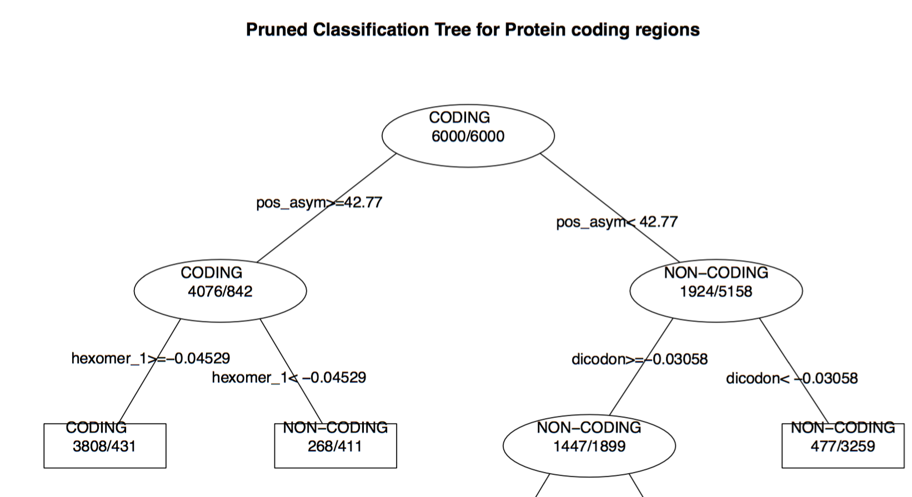

Distinguish between Exons and Introns in Human DNA Sequences
In the first method, I used decision tree algorithm to train classifiers based on several coding measures identified by Fickett J. and Tung C. to distinguish between protein coding and noncoding regions on Human DNA sequences of varying length. This project was inspired from a paper on the subject by Prof. Steven Salzberg.

- Computed several codon measures from DNA sequences across training, tuning and testing set, and applied LDA to extract features.
- Trained decision tree classifiers from training set and reduced overfitting and complexity of the model using cost complexity pruning. Top of the pruned decision tree for 108bp sequences is displayed alongside:
One of the salient observations was the consistent accuracy of decision tree classifier regardless of the length of the DNA sequence. This work also validated the study on relative importance of these coding measures.
Since key information could be lost in converting sequences to features, resulting in relatively poor classification, I am currently working on another method: I represent the raw sequence as a 2-D image through one-hot encoding of codons contained in the sequence, and subsequently train the classifiers using deep learning techniques.
Mining Query-Click Data |
Search & Data Mining, Groupon
Broadly, this comprises of a set of projects which involved mining vast query-click data gathered through Groupon Search engine, and applications thereof:
- Enhanced and Optimized the query-click analytics infrastructure in Hive.
- Designed algorithms using statistical and information theoretic approaches on the query-click data to automate relevance banding for Groupon Search.
- Deependra Singh, Vinay Deolalikar: “Automating Relevance Banding in eCommerce Search using Click Model”. 39th European Conference on Information Retrieval (ECIR 2017). pdf
- Deployed to production in Java registering millions of dollars increase in revenue.
-
Mined user search intent communities over product categories from query-click data using an assortment of techniques from Data Mining: one-mode projection, random walks, and clustering and community detection algorithms.
- Neeraj Pradhan, Vinay Deolalikar, Deependra Singh: “Islands of Interest: Mining Concentrations of User Search Intent over E-commerce Product Categories”. 21st Pacific-Asia Conference on Knowledge Discovery and Data Mining (PAKDD 2017). pdf
- Being used in designing the taxonomy, in facility allocation of inventory, and in recommender systems.
-
[In progress] Productionizing work on query-suggestions using random walks on the query-click bipartite graph for related-searches.
-
[In progress] Integrating mobile query-click data and increasing the granularity of Click Model.
Enhancements in NVDA Screen Reader (B.Tech. Thesis) |
Indian Institute of Technology Delhi
Non Visual Desktop Access (NVDA) is an open source, portable, python-based screen reader for Microsoft Windows. NVDA makes computers accessible to blind and visually impaired individuals. Driven by inspiration to utilize my skills for the betterment of less unfortunates, I undertook this project as my B.Tech. thesis: adding critical support to the NVDA with feedback from the stakeholders.
- Fixed high priority issues in web-browsers and MS word:
- Fixed unwanted spoken dot at the end of a sentence ending with a link when symbol level 'some' .
- Fixed missing identifiers for subscripts and superscripts.
- Added support for all types of charts in MS Excelsheet (new feature):
- Navigational Functionality:
- Switching to charts from worksheet and back
- Switching between charts
- Switching between sheets while browsing charts
- Interpretation Functionality:
- Ability to read basic attributes of a chart such as title, name, type, legend, axes, data series etc.
- Ability to browse data labels inside the chart, and chart specific information